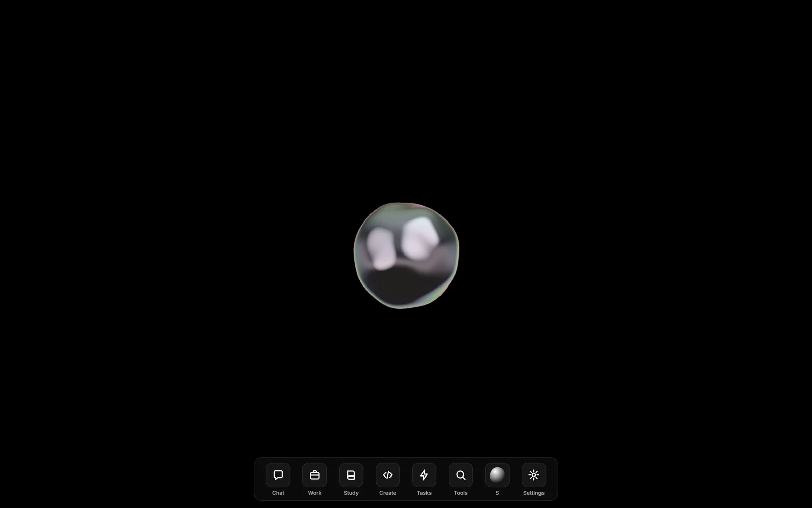
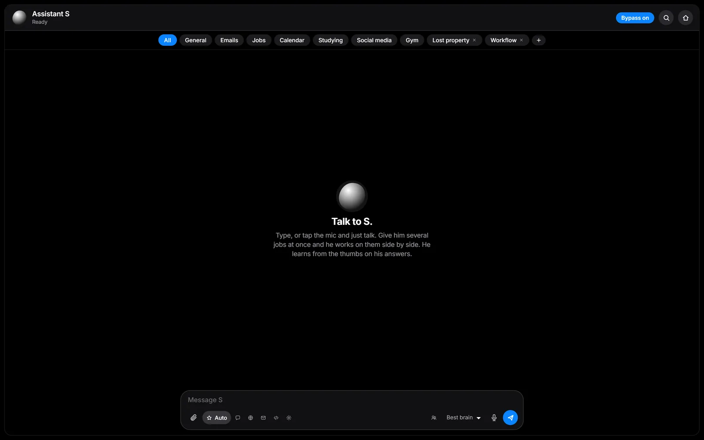
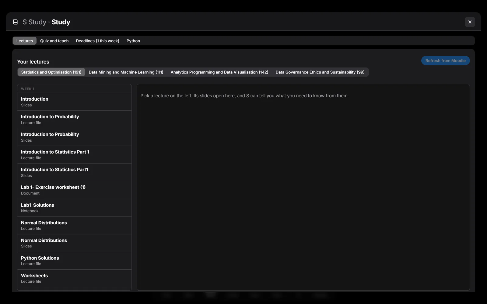

Flagship project, ongoing
Assistant S
My own AI assistant, built from scratch. Talk to it or type, hand it several jobs at once, and it gets on with them side by side.
- Routes each request to Claude, ChatGPT, Grok or Gemini, and switches provider when one hits a usage limit
- Optional local model through Ollama, so simple questions can stay on my machine
- Study workspace that pulls my NCI lectures from Moodle and quizzes me on them
- Local memory with sources and corrections, and a voice orb that reacts when S listens, speaks or works
Where it's going: S's own model, running locally and offline on modest hardware.
Electron, Node.js, Three.js, Vite, WebSockets, SQLite, Python speech


